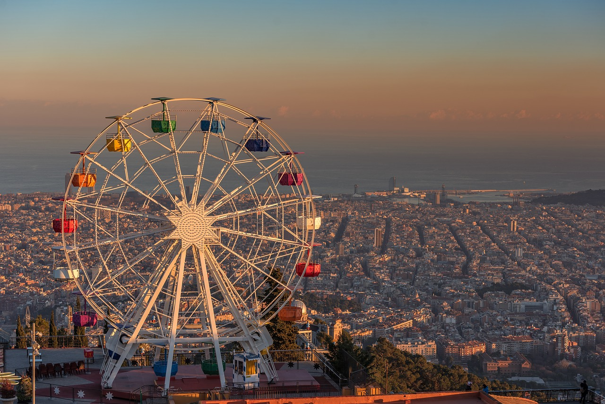
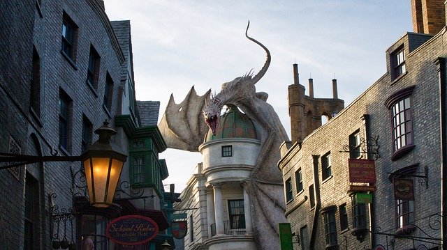
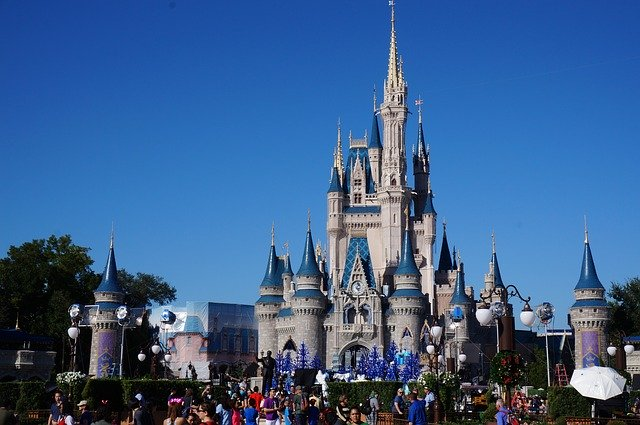
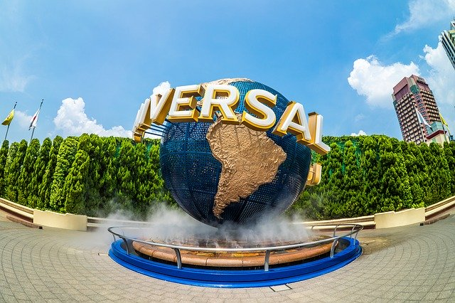
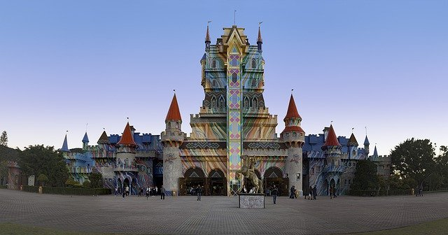

Orlando(EUA)



Localizada na Flórida, a cidade americana tem milhares de lugares para você e a sua família curtirem muito. O complexo Walt Disney World conta com 6 parques incríveis. O mais conhecido é o Magic Kingdom, lugar onde a magia dos desenhos da Disney criam vida. Entre os destaques estão o Castelo da Cinderela e a montanha-russa Space Mountain. Talvez o destino mais desejado por crianças e adultos, o Walt Disney World conta com diversas atrações inpiradas nos clássicos como Bela e a Fera, Indiana Jones ™ e Toy Story. Outra recomendação nossa é o Epcot, com brinquedos baseados no mundo todo, além de explorar também a humanidade e o futuro. Não podemos deixar de falar do Universal Orlando Resort, complexo com hotéis, restaurantes e parques temáticos. Por lá visite o Universal Studios Florida™ e o Universal’s Islands of Adventure™, lugares com atrações inspiradas nos personagens mais famosos do mundo, como Harry Potter, Homem-Aranha, entre outros. Vale conferir também o Universal’s Volcano Bay™, parque aquático com atrações para todos os gostos.
Walt Disney World - Ingressos:
Para o Magic Kingdom os preços são:
US$ 109 (adultos) e US$ 103 (crianças) para baixa temporada,
US$ 119 (adultos) e US$ 113 (crianças) para média temporada,
US$ 129 (adultos) e US$ 123 (crianças) para alta temporada.
Já para os outros três parques, Animal Kingdom, Epcot e Hollywood Studios, os valores são:
US$ 102 (adultos) e US$ 96 (crianças) para a baixa temporada,
US$ 114 (adultos) e US$ 108 (crianças) para a média temporada,
US$ 122 (adultos) e US$116 (crianças) para a alta temporada.
Universal Studios - Ingressos:
Você terá opções para curtir apenas em um dia:
One Park: com este tipo de ingresso você pode visitar apenas um parque em um dia. O valor sai por US$110 para adultos e US$105 para crianças. Você pode escolher qual parque visitar: o Universal Studios OU o Island of Adventure.
Park-to-park [one day]: esse ingresso é ideal para visitar o Universal Studios E o Island of Adventure no mesmo dia. Se você tiver apenas um dia, sugerimos comprar esse ticket – você pode andar de Hogwarts Express, que liga um parque a outro e já é uma atração. Há ótimos brinquedos nos dois parques, então o recomendado é realmente comprar esse ingresso que dá direito a visita os dois em um único dia. O valor é US$165 para adultos e US$ 160 para crianças.
Volcano Bay: Esse é um parque aquático inaugurado em 2017. Ele tem atrações bem legais e boas para quem quer relaxar também. Dá para curtir uma “praia” ou ficar boiando pelas águas. O ingresso para visitar apenas esse parque sai mais em conta: US$67 para adultos e US$ 62 para crianças.
Ou então caso prefira dar uma esticada recomendamos:
Universal Orlando 3 Park 4-Day Park to Park Ticket: esse ingresso é indicado para quem quer visitar os três parques do complexo (Universal Studios, Island of Adventure e Volcano Bay) durante 4 dias, tempo ideal para conhecer todas as atrações com mais tranquilidade. Com esse ingresso você pode ir de um parque para outro (usar o Hogwarts Express, por exemplo) e ter acesso ao Universal CityWalk (onde acontecem shows e tem restaurantes). Esse ingresso é válido por 7 dias, desde a primeira utilização – ou seja, voçê não precisa ir 4 dias seguidos, mas deve utiliza-lo no prazo dos 7 dias). O valor é US$324,99.
Beto Carrero World - Santa Catarina(Brasil)

Inaugurado em 1991, rapidamente se tornou uma sensação para aquela geração de pessoas. Durante os anos 90, esse foi um dos locais mais visitados pelos brasileiros e, claro, também por pessoas de outras regiões da América Latina e do mundo.
Localizado na pequena cidade de Penha, em Santa Catarina (a mais ou menos 90km de distância da capital Florianópolis), esse parque conseguiu sobreviver às mudanças ocorridas nos últimos quase 30 anos. Se adaptando às novas demandas do século XXI, ele permanece como uma incrível opção de diversão no Sul do Brasil. Atualmente, o parque permanece como o maior da América Latina e conta com mais de 100 atrações espalhadas em 14 milhões de metros quadrados de pura diversão. O seu funcionamento é diário entre os meses de novembro, fevereiro e julho. Já nos outros meses, de baixa temporada, funciona apenas às quintas-feiras e domingos.
Os ingressos variam de R$ 100,00(1 dia) a R$ 550,00(passaporte anual por pessoa).
Passaporte de acesso 1 dia - 05 a 59 anos R$ 125,00
Passaporte de acesso 2 dias - 05 a 59 anos R$ 195,00
Meia entrada Sênior(acima de 60 anos) 1 dia R$ 90,00
Meia entrada Sênior(acima de 60 anos) 2 dias R$ 142,00
Confira aqui as regras para meia entrada.

2020 MULTI VIAGENS - TODOS OS DIREITOS RESERVADOS